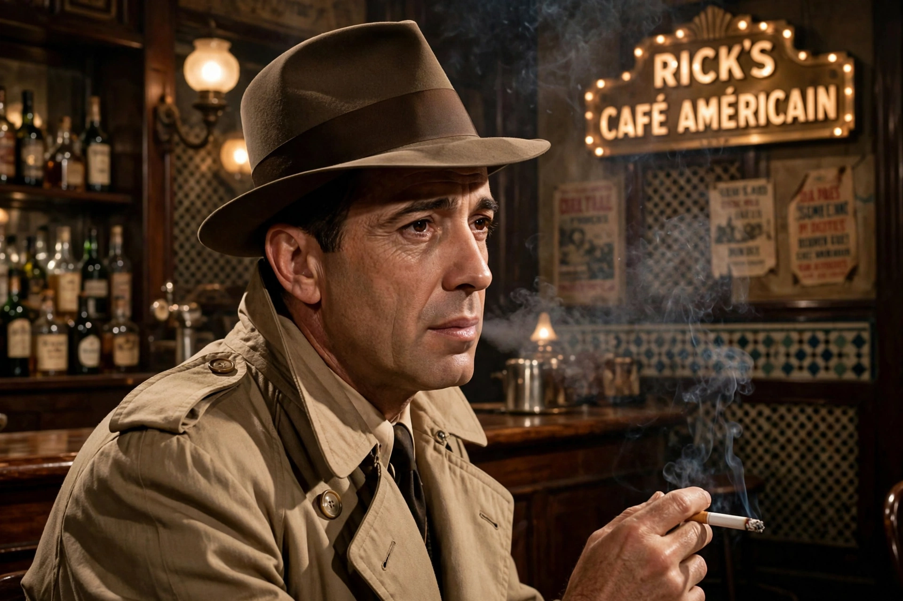

Humphrey Bogart
From Wikipedia, the free encyclopedia

Humphrey DeForest Bogart (25 December 1899 – 14 January 1957) was an American film actor, a cultural icon of the tough, world-weary hero. His performances as Rick Blaine in Casablanca (1942), Sam Spade in The Maltese Falcon (1941) and Philip Marlowe in The Big Sleep (1946) defined the Film noir leading man; he won the Academy Award for Best Actor for The African Queen (1951). The American Film Institute ranked him the greatest male star of classic American cinema.
Career
Born to a wealthy New York family and expelled from Phillips Academy, Bogart served in the Navy in 1918, then ground through a decade of stage and film typecasting as gangsters (The Petrified Forest, 1936, preserved his Broadway role). High Sierra and The Maltese Falcon (both 1941, the latter John Huston's directorial debut) made him a star; Casablanca made him immortal — the cynical romantic whose delivery ('Here's looking at you, kid') fixed his persona.
With Bacall and later work
On To Have and Have Not (1944) he met Lauren Bacall, 19 to his 44; married in 1945, they made four films together and led the liberal 'Rat Pack' prototype in Hollywood politics (Bogart flew to Washington to protest HUAC, then retreated under studio pressure). Later triumphs: The Treasure of the Sierra Madre (1948), In a Lonely Place (1950), The African Queen, The Caine Mutiny (1954).
Death and image
A lifelong heavy smoker, Bogart died of esophageal cancer in 1957, aged 57. French critics and the Bogart cult of the 1960s (Jean-Luc Godard's Breathless hero worships him) canonised his image — raincoat, hat, lisp, cigarette — as the archetype of masculine cool.